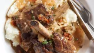

Braised Short Ribs Recipe
Braised Short Ribs

Description
Braising is a combination of dry and moist cooking methods where you sear the meat and then bake the meat in a
liquid.
It sounds intimidating, but it's actually a very straightforward cooking method and yields delicious results
that taste gourmet.
Ingredients
- 4 slices bacon, cut into ½-inch pieces
- 3 ½ pounds beef short ribs
- salt and ground black pepper to taste
- 6 sprigs fresh thyme, leaves stripped
- 1 bay leaf
- 1 onion, diced
- 3 cloves garlic, minced
- 2 tablespoons, all-purpose flour
- 1 cup dry sherry
- 1 quart beef broth
Steps
- Preheat the oven to 350 degrees F (175 degrees C).
- Place bacon in a large skillet and cook over medium-high heat, turning occasionally, until evenly browned,
about 10 minutes. Transfer crisped bacon with a slotted spoon to a Dutch oven. Keep bacon drippings in the
skillet.
- Generously season short ribs with salt and pepper.
- Heat bacon drippings in the skillet over high heat. Cook short ribs in hot drippings until browned and
caramelized on all sides, 3 to 5 minutes per side. Transfer ribs to a Dutch oven, reserving drippings in the
skillet. Add thyme and bay leaf to the Dutch oven. Set aside.
- Reduce heat to medium. Cook and stir onion in the skillet until soft and golden, 5 to 10 minutes. Add
garlic; cook and stir until fragrant, about 30 seconds.
- Whisk flour into onion mixture and stir until mixture becomes paste-like and light golden brown, 1 to 3
minutes.
- Pour sherry into onion mixture; cook until thick and hot, about 2 minutes. Pour onion-sherry mixture into
the Dutch oven; pour in beef broth and season with salt. Bring to a simmer and cover the Dutch oven with a
lid.
- Transfer the Dutch oven to the preheated oven and cook until short ribs are fork-tender, about 2 hours.
Remove ribs to a serving dish, reserving sauce in the pot.
- Set Dutch oven over high heat and boil sauce until reduced and slightly thickened, about 10 minutes. Spoon
reduced sauce over ribs.